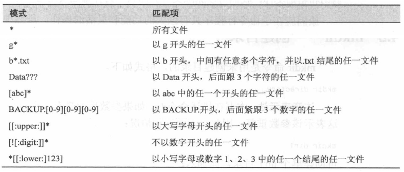
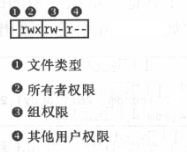
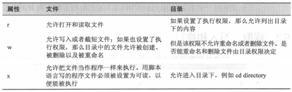

1. Tips
1.1. 关于 Linux 系统的目录结构
1.2. 关于 .
表示目录时，代表
工作目录以
.开头的文件是隐藏的
1.3. 关于 ..
- 代表
工作目录的父目录
1.4. 关于文件
Linux 中，
文件名和命令是区分大小写的Linux
没有文件扩展名的概念在类 UNIX 操作系统中，存在一个普遍的概念：
所有的东西都是一个文件
1.4.1. Linux 支持长文件名
文件名可包含
空格和标点符号创建文件时，可以直接使用
.：英文句号-：连字符_：下划线空格需要转义
- 文件名中
尽量不要使用空格- 使用空格让一些命令行任务变得麻烦
- 需要使用空格隔开单词时，可以使用下划线代替
1.5. 选项和参数
- 一个命令后可跟一个或多个选项
选项确定命令的功能-：单连字符，短选项，支持多个选项串在一起--： 双连字符，长选项
- 一个命令后还可跟一个或多个参数
参数是命令作用的对象
- 命令一般格式
command -options arguments
1.6. 关于链接
1.6.1. 硬链接
硬链接就是一个文件的一个或多个文件名
- 硬链接就是让多个不在或者同在一个目录下的文件名，同时能够修改同一个文件，其中一个修改后，所有与其有硬链接的文件都一起修改了
- 硬链接和文件本身没有任何区别。包含硬链接的目录列表没有特别的链接指示说明其为硬链接
- 当一个硬链接被删除时，只是删除了这个链接，文件本身的内容不一定被删除了，除非该文件的所有硬链接都被删除了。
硬链接的局限性
- 硬链接不能引用自身文件系统之外的文件。也就是说，硬链接不能引用与该链接不在同一磁盘分区的文件
- 硬链接无法引用目录
每个硬链接都指向包含文件内容的具体索引节点(inode)
- ls -i 可以查看到索引节点
- 可以通过索引节点确定硬链接是否引用同一文件内容
1.6.2. 符号链接
符号链接通过创建一个特殊类型的文件来起作用。该文件包含了指向引用文件或目录的文本指针
符号链接指向的文件与符号链接自身几乎没有区别。将一些内容写入符号链接，那么这些内容实际上写入了引用文件
当删除一个符号链接时，删除的只是符号链接本身而没有删除其引用的文件
如果先于删除符号链接之前删除其引用文件或目录，那么这个链接依然存在
- 此符号链接指向一个无效文件或目录
- 此链接称为坏链接
创建符号链接时，同时也创建一个文本来描述目标文件在哪里
- 使用相对路径。相对符号链接的路径
- 使用绝对路径
符号链接的文件大小就是链接目标的路径字符串的字节数
大部分文件操作是以符号链接目标为对象的，而非链接本身
- rm 命令是个例外，当删除一个符号链接时，链接本身被删除，链接目标依旧存在
1.7. 关于 shell 通配符
- 通配符
- 常用字符类
- 避免使用
[A-Z][a-z]形式的字符范围表示法，在一些命令中可能无效。统一使用字符类表示法
- 避免使用
- 示例
- 通配符的使用使得为文件名构建复杂的筛选标准成为可能

- 通配符可以与任意一个使用文件名为参数的命令一起使用
1.8. 命令的分类
可执行程序
- 二进制文件(由C/C++等编写后编译生成)
- 脚本语言编写的文本文件
shell 内置命令
- 各类 shell 均支持一些 shell builtin 命令
shell 函数
- shell 函数是合并到环境变量中的小型 shell 脚本
alias 命令
- 在其他命令的基础上定义的命令
1.9. 拼接多条命令
;: 前后命令间没有逻辑关联，前后命令顺序执行
date ; who
&&: 前后命令间有逻辑关联，前面的命令执行成功，才会执行后面的命令
date && who
||: 前后命令间有逻辑关联，前面的命令执行失败，才能执行后面的命令
date || who
1.10. 关于转义字符
以
\开头来定义一个转义字符转义字符经常在双引号中用来有选择性地阻止扩展
转义字符也常用来消除文件名中某个字符的特殊含义
单引号中的反斜杠没有特殊含义，就是一个普通的字符
1.11. 所有者、组成员和其他所有用户
在 UNIX 安全模式中，一个用户(user)可以拥有(own)文件和目录
当一个用户拥有一个文件或者目录时，他将对该文件或目录的访问权限拥有控制权
一个用户归属于一个群组(group)，一个群组由一个或多个用户组成，群组中用户对文件和目录的访问权限由其所有者(owner)授予
文件和目录的所有者也可以授予所有其他用户(除去自己和群组用户)一些访问权限
1.12. 关于文件属性
- 对文件和目录的访问权限是按照读访问、写访问以及执行访问来定义的
1.12.1. 解释说明：-rwxrw-r--

- 文件类型
- 文件的权限模式
- rwxrw-r--

- 示例
1.13. 更改身份
- 转换身份的三种方法
- 注销系统并以其他用户的身份
重新登录系统 - 使用
su命令 - 使用
sudo命令
- 注销系统并以其他用户的身份
1.14. Linux 的安全性
Linux 安全系统的核心是用户账户。
每个能进入 Linux 系统的用户都会被分配唯一的用户账户。
用户对系统中各种对象的访问权限取决于登录系统时用的账户。
用户权限是通过创建用户时分配的用户ID(User ID, 通常缩写为UID)来跟踪的。
Linux 系统使用特定的文件和工具来跟踪和管理系统上的用户账户。
1.15. 详解 /etc/passwd 文件
Linux 系统使用 /etc/passwd 文件来将用户的登录名匹配到对应的 UID 值。
root 用户账户是 Linux 系统的管理员, 固定分配给它的 UID 是 0。
Linux 系统会为各种各样的功能创建不同的用户账户, 而这些账户并不是真的用户。这些账户叫作系统账户, 是系统上运行的各种服务进程访问资源用的特殊账户。所有运行在后台的服务都需要用一个系统用户账户登录到 Linux 系统上。
Linux 为系统账户预留了 500 以下的 UID 值。有些服务甚至要用特定的 UID 才能正常工作。
为普通用户创建账户时, 大多数(并非所有) Linux 系统会从 500 开始, 将第一个可用 UID 分配给这个账户。
/etc/passwd 文件的字段包含的信息
- 登录用户名
- 用户密码
- 设置为 x。代表隐藏。
- 绝大多数 Linux 系统都将用户密码保存在另一个单独的文件中(叫作 shadow 文件, 位置在 /etc/shadow)。只有特定的程序(如登录程序)才能访问这个文件。
- 用户账户的 UID(数字形式)
- 用户账户的组 ID(GID)(数字形式)
- 用户账户的文本描述(称为备注字段)
- 用户 HOME 目录的位置
- 用户的默认 shell
可以用任何文本编辑器在 /etc/passwd 文件里直接手动进行用户管理(如添加、修改或删除用户账户)。但这样做极其危险。
如果 /etc/passwd 文件出现损坏, 系统就无法读取它的内容了, 这样会导致用户无法正常登录(即便是 root 用户)。
1.16. 详解 /etc/shadow 文件
/etc/shadow 文件对 Linux 系统密码管理提供了更多的控制。
只有 root 用户才能访问 /etc/shadow 文件。
/etc/shadow 文件为系统上的每个用户账户都保存了一条记录。
在 /etc/shadow 文件的每条记录中都有 9 个字段
- 与 /etc/passwd 文件中的登录名字段对应的登录名
- 加密后的密码
- 自上次修改密码后过去的天数密码(自 1970 年 1 月 1 日开始计算)
- 多少天后才能更改密码
- 多少天后必须更改密码
- 密码过期前提前多少天提醒用户更改密码
- 密码过期后多少天禁用用户账户
- 用户账户被禁用的日期(用自 1970 年 1 月 1 日到当天的天数表示)
- 预留字段给将来使用
使用 shadow 密码系统后, Linux 系统可以更好地控制用户密码。
1.17. 关于用户组
用户账户在控制单个用户安全性方面很好用, 但涉及在共享资源的一组用户时就捉襟见肘了。
Linux 系统采用了另外一个安全概念——组(group)。
组权限允许多个用户对系统中的对象(如文件、目录或设备等)共享一组共用的权限。
Linux 发行版在处理默认组的成员关系时略有差异。
- 有些 Linux 发行版会创建一个组, 把所有用户都当作这个组的成员。遇到这种情况要特别小心, 因为文件很有可能对其他用户也是可读的。
- 有些发行版会为每个用户创建单独的一个组, 这样可以更安全一些。每个组都有唯一的 GID, 在系统上这是个唯一的数值。除了 GID, 每个组还有唯一的组名。Linux 系统上有一些组工具可以创建和管理自己的组。
1.18. 详解 /etc/group 文件
组信息保存在 /etc/group 文件中。
/etc/group 文件包含系统上用到的每个组的信息。
GID在分配时采用了特定的格式。系统账户用的组通常会分配低于 500 的 GID 值, 而用户组的 GID 则会从 500 开始分配。
/etc/group 文件有4个字段
- 组名
- 组密码
- GID
- 属于该组的用户列表
组密码允许非组内成员通过它临时成为该组成员。这个功能并不很普遍, 但确实存在。
不要通过直接修改 /etc/group 文件来添加用户到一个组, 要用 usermod 命令。
在添加用户到不同的组之前, 首先得创建组。
注意：在列表中, 有些组并没有列出用户。这并不是说这些组没有成员。当一个用户在 /etc/passwd 文件中指定某个组作为默认组时, 用户账户不会作为该组成员再出现在 /etc/group 文件中。
1.19. 关于进程
init 程序依次运行一系列称为脚本初始化(init script)的 shell 脚本(/etc 目录下)，这些脚本将会启动所有的系统服务
- 很多系统服务都是守护进程(daemon program)
- 守护进程不会向用户终端输出信息
父进程创建子进程：一个程序的运行可以触发其他程序的运行
内核会保存每个进程的信息以便确保任务有序进行。每个进程将被分配一个进程 ID
- PID(process ID)
- 进程 ID 是按递增的顺序来分配的(init 进程的 PID 始终为 1)
内核也记录分配给每个进程的内存信息以及用来恢复运行的进程就绪信息
进程系统中也存在所有者、用户 ID、有效用户 ID 等
1.20. 关于进程控制
Ctrl-Z
- 停止(暂停)进程
- 暂停前台运行的进程
Ctrl-C
- 中断进程
- 大多数命令行程序都可以使用 Ctrl-C 来实现中断
command &
- command 程序会在后台运行，终端立即返回。并显示作业控制信息。作业控制信息包括(作业编号，PID)
- 后台运行的程序不会受到任何键盘输入的影响
jobs 列出所有活动作业的状态信息
bg 设置在后台中运行作业
fg 设置在前台中运行作业
1.21. 关于信号
基本概念
- 准确的说，kill 命令不是“杀死”进程，而是给进程发送信号(signal)
- 信号是操作系统和程序间通信的多种方式之一
- Ctrl-C：中断进程；给进程发送 INT 信号(Interrupt)
- Ctrl-Z：停止(暂停)进程；给进程发送 TSTP 信号(Terminal Stop)
- 反过来，进程监听信号，在接收到信号的时候按照它们的指示进行操作
kill 发送信号到进程
killall 发送信号给多个进程
1.22. 关于文件归档
归档是与压缩操作配合使用的一个常用文件管理任务。
归档是一个聚集众多文件并将它们组合为一个大文件的过程, 它通常作为系统备份的一部分, 而且通常也用于将旧数据从某个系统移到某些长期存储设备下。
1.23. 退出状态
命令(包括开发者编写的脚本和 shell 函数)在执行完毕后, 会向操作系统发送一个值, 称之为"退出状态"。这个值是一个 0-255 的整数, 用来指示命令执行成功还是失败。
按照惯例, 数值
0表示执行成功,其他的数值表示执行失败。shell 提供了一个可以用来检测退出状态的参数。
前一个命令执行后的退出状态会赋值给变量
?。示例
ls -d /usr/bin # /usr/bin
echo $? # 0
ls -d /bin/usr
# ls: cannot access '/bin/usr': No such file or directory
echo $? # 2
有些命令使用不同的退出值来诊断错误, 而许多命令在执行失败时, 只是简单地退出并发送数字 1。
man 手册中经常会包括一个标题为 "Exit Status" 的段落, 它描述使用的代码。数字 0 总是表示执行成功。
shell 提供了两个非常简单的内置命令, 它们不做任何事情, 除了以一个 0 或 1 退出状态来终止执行。"true" 命令总是表示执行成功, 而 "false" 命令总是表示执行失败。
在 shell 函数中，使用 return 命令返回一个函数的退出状态。
- return # 退出状态为 0
- return 1 # 退出状态为 1
在 shell 脚本中，使用 exit 命令返回一个脚本的退出状态。
- exit # 退出状态为 0
- exit 1 # 退出状态为 1